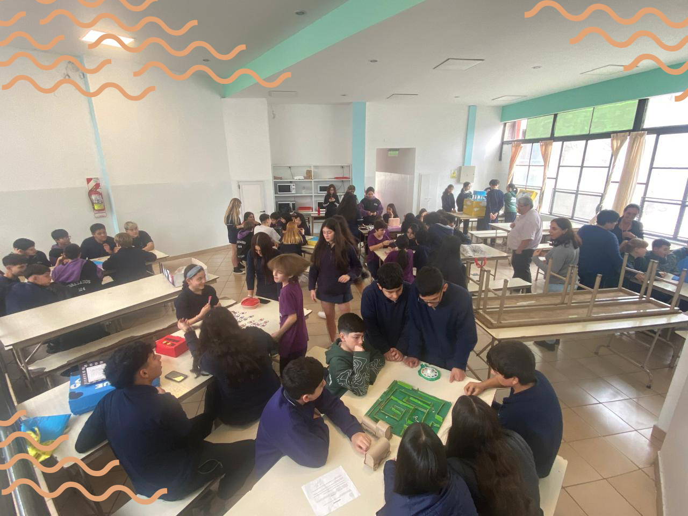

Los chicos de segundo año A y B crearon juegos en base a una novela que estuvieron leyendo con la profesora de literatura, MARÍA ANA RAGO. En el día de la fecha, 13 de junio de 2024 fueron presentados estos juegos ante los alumnos de séptimo grado A y B. En la novela se hablaba de un nene que no disfrutaba de las atracciones de feria y prefería permanecer en su casa, encerrado en su habitación, creando juegos de mesa. Finalmente, gracias a este hobby, decidió inscribirse en un concurso para fabricar el mejor juego de mesa, que vio en un folleto. Al finalizar con la lectura de la novela, la profesora propuso la idea de que los chicos inventen un juego como parte de una interpretación. Logrando así, fomentar el compañerismo, despertar la creatividad y desarrollar sus ideas. Se llevó a cabo una exposición anterior al día de la presentación a los chicos de séptimo, donde los alumnos de segundo año debieron explicar sus juegos, y ponerlos a prueba entre ellos. El día de la exposición de los juegos, los alumnos de segundo debieron presentarlos y explicarlos ante los chicos de séptimo, para que luego los pongan a prueba por elección propia. Uno de los juegos más elegidos por los chicos consistía en girar una ruleta y ser el primero cuyo globo aerostático llegue a la cima de la "planta". Esta ruleta contenía múltiples retos que debían ser cumplidos para poder avanzar y ganar el juego. Luego de la presentación, los chicos de segundo año charlaron junto con la profesora, dando sus diferentes opiniones y perspectivas sobre la actividad realizada
